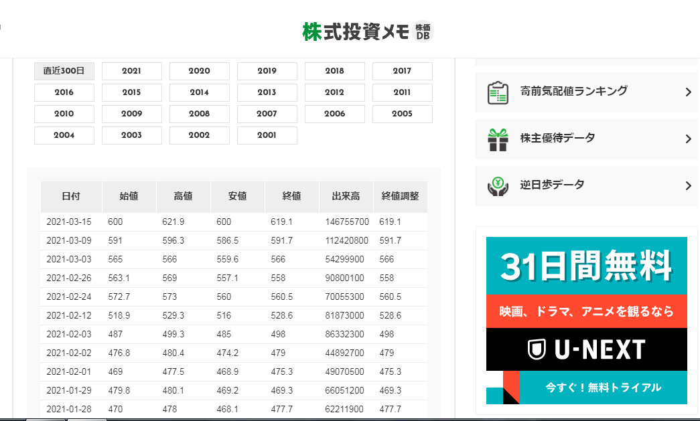

回帰分析による気温予測で身に着けたことに、Webスクレイニングを付随して、
株式投資メモに記載されている個別銘柄データにプログラムからアクセスし
年別に異なるページに記載されている株式の値データを読み取り、すべての年データを結合してデータフレームにし、
そこから高値、安値に対して気温予測の際のように回帰分析を行っていきたいと思います。
これにより、予測安値付近で買い、予測高値付近で売る（または逆）を行うことができるかもしれません。
